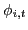
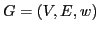
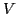
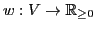
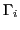
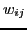
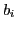
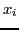
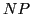

. This model has been extensively analyzed in epidemiology and adapted in the cyber security area for analysis of computer viruses propagation. We now formulate the optimization problem whose goal is to keep the level of infection at each node low while maximizing the (weighted) number of ``alive'' connections. This is motivated by the infection spread response policies that are often driven by the number of resources available for the realization. We denote the graph of a network by
, where
and
represents the strength of connectivity (such as the number of shared users in a cyber system). Assuming that the probabilities of infection transition from
(neighbors of
is the link weight between nodes
is a threshold for the level of allowed probability of infection at
are binary variables (1 - if we decide to leave the node
-complete. We demonstrate a strategy for designing fast multiscale methods for this class of problems. The refinement represents the collective improvement for sufficiently small subsets of variables. This phase can easily be performed in parallel by using the red-black order. Single subset refinement solves problem for subset of nodes by choosing a connected subgraph and fixing the boundary conditions for the rest of the nodes.We evaluate our method on a set of small networks with known optimal solutions, two case studies (HIV spread and cyber infrastructure networks), and one massive data set. The two case study networks are typical complex network instances on which solving this particular optimization is of great practical importance. The massive dataset evaluation contains networks of different structures and sources that can potentially represent hard structures for the method. In all experiments our method improved best known results (quality and/or running time) significantly.